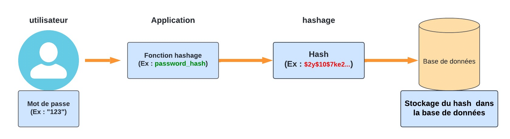
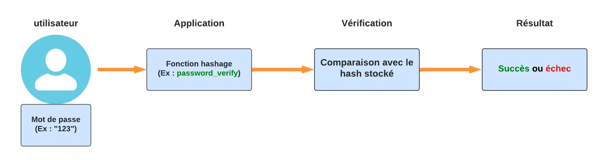
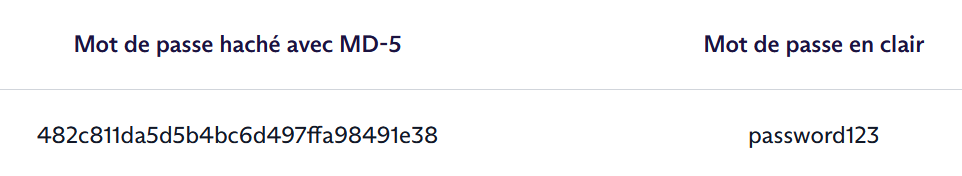
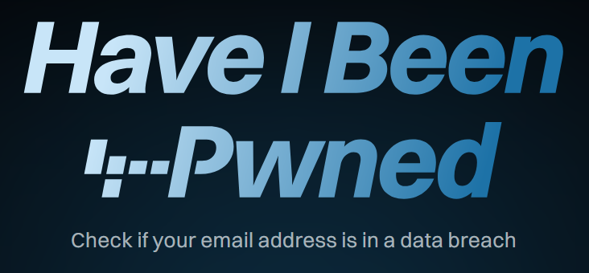

TP Cyber  ⚓︎
⚓︎
Rappel autour d'un mot de passe
On a déjà travaillé autour des mots de passe ici
1. attaque par force brute et requête GET  Cyber ⚓︎
Cyber ⚓︎

Pré-requis 1 : le module requests en python⚓︎
Le module requests permet d'aller chercher le contenu d'une page web, suivant la syntaxe ci-dessous.
Testez le code ci-dessous :
| 🐍 Python | |
|---|---|
1 2 3 | |
La sortie en console est :
<!DOCTYPE html>
<html>
<head>
<title>Waouh</title>
</head>
<body>
Ceci est vraiment une jolie page web.
</body>
</html>
Notre programme Python se comporte donc «comme un navigateur» : il se rend sur une page, effectue une requête et récupère la page renvoyée.
(Rappel) l'extraction d'un fichier texte sous forme de liste⚓︎
Le code ci-dessous permet de collecter dans une liste mots l'ensemble des mots compris dans le fichier monfichiertexte.txt (si celui-ci comprend un mot par ligne)
mots = open("monfichiertexte.txt").read().splitlines()
2. Application Force brut en clair⚓︎
Votre objectif est de trouver le mot de passe demandé sur la page https://sofaugeras.com/exoBF.html
Vous allez vous appuyer sur un leak (fuite) très célèbre de mots de passe , qui est le leak du site Rockyou. Dans la base de données de ce site, 32 millions de mots de passe étaient stockés en clair.
Lorsque le site a été piraté, ces 32 millions de mots de passe se sont retrouvés dans la nature. Ils sont aujourd'hui téléchargeables librement, et constituent un dictionnaire de 14 341 564 mots de passe différents (car parmi les 32 millions d'utilisateurs, beaucoup utilisaient des mots de passe identiques). Ce fichier est téléchargeable ici, mais attention il pèse 134 Mo.
Nous allons utiliser un fichier beaucoup plus léger ne contenant que les 1000 premiers mots de passe : Le jeu de données : Rockyou
L'un de ces mots de passe est le mot de passe demandé à la page https://sofaugeras.com/exoBF.html .
Lequel ?
Correction
| 🐍 Python | |
|---|---|
1 2 3 4 5 6 7 8 9 10 11 12 13 14 15 16 17 18 | |
En vérité
En vérité, les mots de passes sont la plupart du temps stockés dans des bases de données et jamais au grand jamais en clair !! Mais alors comment les hackers font ils pour craquer des passes issus de fuite de données.
2. Notion de hachage et d'empreinte⚓︎
Comme les mots de passe ne sont pas stockés en clair, on va les chiffré. Pour ce faire, on va utiliser la notion de hachage.
2.1 Définition 🧠⚓︎
Une fonction de hachage est une fonction mathématique qui transforme une donnée de taille variable en une empreinte (ou hash) de taille fixe.
🟢 Exemples d’algorithmes de hachage :
- MD5 → 128 bits (obsolète)
- SHA-1 → 160 bits (obsolète)
- SHA-256 → 256 bits (encore utilisé)
- Bcrypt / Argon2 → pour le hachage sécurisé des mots de passe

📦 Caractéristiques d’une fonction de hachage
| Propriété | Explication |
|---|---|
| Déterministe | Une même entrée produit toujours le même hash. |
| Rapide à calculer | L'empreinte est calculée rapidement. |
| Non réversible | On ne peut pas retrouver l’entrée à partir du hash. |
| Collision résistante | Difficile de trouver deux entrées différentes qui donnent le même hash. |
Utilisation
✅ Vérification d’intégrité
On compare le hash du fichier d’origine avec celui téléchargé.
Ex : téléchargement d’une ISO Debian avec une empreinte SHA-256.
🔑 Stockage sécurisé des mots de passe
Le mot de passe n’est jamais stocké en clair.
On stocke : hash(motdepasse)
Lors de la connexion : on re-hash et compare.
🧾 Signatures numériques
Permettent de garantir qu’un document n’a pas été modifié.
🚩 Exemple d'utilisation
import hashlib
texte = "bonjour"
hash_obj = hashlib.sha256(texte.encode())
empreinte = hash_obj.hexdigest()
print("Texte :", texte)
print("SHA-256 :", empreinte)
note : il existe d'autres bibliothèques de hashage, comme bcrypt
Lors d'une authentification, on va comparer le mot de passe fourni par l’utilisateur (en clair dans le formulaire puis transmis en HTTPS puis haché de la même manière qu'à l'étape de stockage) avec le hachage stocké dans la base de données. Si les deux correspondent, l’accès est accordé.

Application
Créer une fonction verifie_hash(mot, hash) pour comparer un mot avec une empreinte.
import hashlib
def verifie_hash(mot, hash_attendu):
"""
Vérifie si le hash SHA-256 du mot correspond à l'empreinte attendue.
"""
hash_calcule = hashlib.sha256(mot.encode()).hexdigest()
return hash_calcule == hash_attendu
assert verifie_hash("bonjour", empreinte) == True
assert verifie_hash("Bonsoir", empreinte) == False
3. Notion de rainbows Tables⚓︎
À quoi sert une Rainbow Table ?⚓︎
Une Rainbow Table est un fichier volumineux contenant une multitude de mots de passe reliés à leur valeur de hachage (empreinte).

Les cybercriminels s’en servent pour cracker des mots de passe. Les Rainbow Tables permettent généralement de réduire le temps et la mémoire nécessaires à l’attaque, contrairement aux attaques par force brute qui requièrent beaucoup de temps et aux attaques par dictionnaires qui nécessitent beaucoup de mémoire.
À noter que les Rainbow Table peuvent également être utilisées par des experts en cybersécurité pour identifier des failles ou effectuer des tests de sécurité.
Comment fonctionne une Rainbow Table ?⚓︎
Lors de la génération d’une Table arc-en-ciel, chaque mot de passe est haché (le procédé peut être répété plusieurs fois en fonction des cas).
Seul le mot de passe initial et la valeur finale sont conservés dans la Table. Ce processus est ensuite répété à partir de nouveaux mots de passe, jusqu’à obtenir une Table importante.
Pour cracker un mot de passe, le cybercriminel va chercher son empreinte dans la Table arc-en-ciel. Une fois trouvée, il peut donc récupérer le mot de passe initial de cette empreinte.
Activité
Prérequis : Manipulation de dictionnaire et CSV
🔽 Activité : Manipulation d'une rainbow Table
Stockage d'un mot de passe⚓︎
La règle de "base" en hygiène de codeur est de ne JAMAiS stocké un mot de passe en clair, que ce soit dans un fichier ou pire dans une base de données. Un site ne doit jamais être en capacité de vous communiquer votre mot de passe initial !
Le seul moment où un mot de passe est en clair est quand il est saisi dans le champ du formulaire.
Imaginons ... Si tous les sites avaient tous la même méthode de chiffrement (MD5 ou SH256) et qu'un utilisateur utilisait le même mot de passe sur tous ces sites ...
Il existe des fuites de données recensant le couple identifiant/mot de passe d'un grand nombre de personne !
Vous pouvez tester votre adresse mail sur le site ';--have i been pwned? pour savoir si celle ci appartient à une fuite de données connue.

Mise en exemple :
Alphonse (al@mail.com) utilise le mot de passe "secret" pour les sites monsite.fr et concurrent.fr
Chacun des deux sites utilise la même méthode de chiffrement MD5.
Donc chacun des deux sites possèdent dans sa base le couple al@mail.com et 5ebe2294ecd0e0f08eab7690d2a6ee69.
monsite.fr subit une attaque et une fuite de données massive.
le pirate possède donc le moyen de se connecter à concurrent.fr avec le compte d'alphonse...
C'est la que l'on introduit la notion de salage.
Définition : Le salage est un procédé utilisé en cryptographie pour renforcer la sécurité des mots de passe stockés. Il consiste à ajouter une valeur aléatoire unique (appelée "sel" ou "salt") à chaque mot de passe avant de le hacher. Cela rend plus difficile pour les attaquants d'utiliser des attaques par table arc-en-ciel ou par dictionnaire, car même si deux utilisateurs ont le même mot de passe, leurs hashs seront différents grâce aux sels uniques.
| 🐍 Python | |
|---|---|
1 2 3 4 5 6 7 8 9 10 11 | |
5ebe2294ecd0e0f08eab7690d2a6ee69
b'\xc3;K\xc2\xfb\xb4z\xca`f\xc4T\xc9I\x1b.'